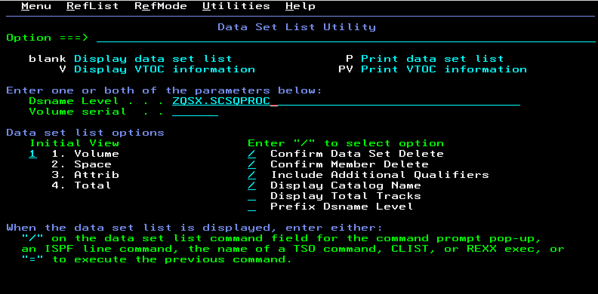
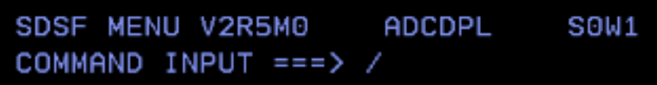

Customizing a New Queue Manager on IBM MQ for z/OS
Audience level
Some knowledge of MQ or z/OS
Skillset
z/OS Systems Programming, MQ Administration
Background
Each time a new release of IBM MQ for z/OS is installed, you have an opportunity to create or migrate a queue manager and take advantage of the latest function available in that release.
This lab walks through the process of creating a new queue manager using IBM MQ for z/OS 9.4.2 CD (Continuous Delivery). IBM MQ for z/OS is assumed to be already installed in the lab environment, so the product installation itself is out of scope.
Why create a queue manager from scratch?
Understanding the manual creation process provides useful insight into:
- Architecture: how z/OS queue managers integrate with the operating system
- Performance tuning: the impact of page set and storage configuration
- Troubleshooting: what to check when a queue manager fails to start
- Automation: the foundation for repeatable provisioning and tools such as Ansible
Overview of the exercise
In this lab, you will:
I. Copy and tailor MQ sample JCL
The IBM MQ installation provides sample JCL members that must be customized for your queue manager name, data set names, storage choices, and runtime configuration.
II. Run jobs to create the bootstrap data sets and page sets
IBM MQ uses VSAM linear data sets for key queue manager resources. These must be created before the queue manager can start.
III. Add MSTR and CHIN procedures to SYS1.PROCLIB
A z/OS queue manager uses two started tasks: MSTR and CHIN. MVS must be able to locate the procedures for both.
IV. Dynamically add the MQ subsystem to MVS
The subsystem definition allows MVS to recognize the queue manager as an MQ subsystem.
V. Define subsystem security
In this lab environment, subsystem security is relaxed to simplify the exercise. This step is for lab use only.
VI. Start the queue manager and channel initiator
Once the supporting data sets, procedures, subsystem definition, and security are in place, you can start the queue manager.
Lab instructions
I. Copy and tailor the sample JCL
- Copy the sample members from the IBM MQ installation library. In this environment, the MQ installation uses the high-level qualifier
MQ942CD. You only need the sample members inSCSQPROC. From ISPF option3.3, copy all members from:
MQ942CD.SCSQPROC(*)
Option ===> C
-
Use
ZQSXas the high-level qualifier for the new queue manager library so the copied library becomesZQSX.SCSQPROC. -
Type
1next to option 1 so the new data set is allocated using the attributes ofMQ942CD.SCSQPROC, then press Enter. -
Confirm that the members were copied successfully. You should see a message indicating that 113 members were copied into
ZQSX.SCSQPROC. -
From the ISPF main screen, enter
=3.4on the command line and navigate to the newly created data set.

-
Press Enter, then browse the library by entering
Bnext to the data set name. -
The following members must be customized to create a basic queue manager:
| JCL member | Description |
|---|---|
CSQ4BSDS |
Creates bootstrap data sets |
CSQ4CHIN |
Sample channel initiator procedure |
CSQ4MSTR |
Sample queue manager procedure |
CSQ4INPX |
Sample channel initiator commands |
CSQ4INYG |
Commands to define commonly required objects |
CSQ4PAGE |
Creates page sets |
CSQ4ZPRM |
Creates queue manager initiation attributes |
- Locate and edit
QMEDIT. Review the REXX EXEC to understand what it customizes. Because it was last used forZQS2, you will seeZQS2and older installation values throughout the member.
The REXX EXEC allows you to make repeated substitutions across the sample members. For example:
ISREDIT MACRO NOPROCESS
ADDRESS ISREDIT
/* **** UNIVERSAL CHANGES **** */
/* **** HIGH LEVEL QUALIFIER FOR THE WMQ LIBRARIES **** */
"change '++THLQUAL++' 'MQ933CD' all"
/* **** LANGUAGE LETTER **** */
"change '++LANGLETTER++' 'E' all"
/* **** HIGH LEVEL QUALIFIER FOR THE BSDS, LOGS, AND **** */
/* **** PAGE SETS **** */
"change '++HLQ++' 'ZQS2' all"
/* **** CSQ4BSDS CHANGES **** */
"change '++BSDSNAME++' 'MY.BSDS.DS' all"
"change '++VOLBSDS1++' 'V1BSDS' all"
"change '++VOLBSDS2++' 'V2BSDS' all"
"change '++VOLLOG1A++' 'V1LOGA' all"
"change '++VOLLOG1B++' 'V1LOGB' all"
"change '++VOLLOG2A++' 'V1LOGC' all"
"change '++VOLLOG2B++' 'V1LOGD' all"
/* **** CSQ4CHIN CHANGES **** */
"change '++LEQUAL++' 'CEE' all"
"change '++SSLQUAL++' 'SYS1' all"
"change '++OUTCLASS++' '*' all"
"change '++EXITLIB++' 'MY.EXITS' all"
/* **** CSQ4INPX CHANGES **** */
"change '++port-number++' '1424' all"
"change '++LOCALluname++' 'LUNAME' all"
"change '++channel-name++' 'TEST.CHANNEL' all"
/* **** CSQ4INYG CHANGES **** */
"change '++qmgr++' 'QMGR' all"
/* **** CSQ4MSTR CHANGES **** */
"change '++OUTCLASS++' '*' all"
"change '++EXITLIB++' 'MY.EXITS' all"
"change '++LEQUAL++' 'CEE' all"
"change '++DB2QUAL++' 'DB2V13' all"
/* **** CSQ4PAGE CHANGES **** */
"change '++VOL0++' 'STORAGE' all"
"change '++VOL1++' 'STORAGE' all"
"change '++VOL2++' 'STORAGE' all"
"change '++VOL3++' 'STORAGE' all"
"change '++VOL4++' 'STORAGE' all"
/* **** CSQ4ZPRM CHANGES **** */
"change '++NAME++' 'QMGRZPRM' all"
- Update the values in
QMEDITby issuing these ISPF change commands:
a. Replace the existing queue manager qualifier:
C 'ZQS2' 'ZQSX' ALL
b. Replace the MQ installation high-level qualifier:
C 'MQ933CD' 'MQ942CD' ALL
c. Change the listener port to avoid conflict with ZQS2:
C '1424' '1425' ALL
-
These updates tailor the REXX EXEC for this z/OS environment by setting the correct installation qualifier, queue manager name, and listener port.
-
To activate
QMEDIT, pressF3, return to the ISPF main menu, select option6, and enter:
ALTLIB ACTIVATE APPLICATION(EXEC) DA('ZQSX.SCSQPROC')
-
Press Enter.
ALTLIBactivates the REXX EXEC library so thatQMEDITcan be run against the members you need to customize. -
Return to
ZQSX.SCSQPROCthrough ISPF option3.4. -
Starting with
CSQ4BSDS, edit each of the following members and runQMEDITfrom the command line inside the member: -
CSQ4BSDS CSQ4CHINCSQ4MSTRCSQ4INPXCSQ4INYGCSQ4PAGE-
CSQ4ZPRM -
After you run
QMEDITinCSQ4BSDS, browse through the JCL usingF7andF8to confirm the changes, then pressF3to save and return to the member list.
NOTE: You must execute
QMEDITin the same session in which you ran theALTLIBcommand. Otherwise, you will receive the messageQMEDIT not found.
-
Repeat the same process for the remaining members.
-
Make an additional customization to
CSQ4PAGE. Edit the member and issue the following commands:
C 'VOL=SER' 'STORCLAS' ALL
C 'VOLUMES' 'STORCLAS' ALL
This changes the sample JCL from explicit volume usage to system-managed storage, which is the preferred approach in this environment.
-
Save
CSQ4PAGEwithF3. -
Edit
CSQ4ZPRMand issue the following command:
C '++HLQ.USERAUTH++' 'ZQS1.USERAUTH' ALL
-
Edit
CSQ4CHIN, then enterF USER EXIT LIBRARYon the command line to locate the user exit library definitions. -
Comment out lines 94 and 119 by placing
*in the first column so they look like this:
000094 //* DD DSN=++CSFQUAL++.SCSSFMOD0,DISP=SHR
000119 //* CSQXLIB DD DSN=++EXITLIB++.DISP=SHR
-
Press
F3to saveCSQ4CHINand return to the member list. -
Optionally, use
SORT CHANGEDfrom the member list panel to confirm which members were updated.
II. Run jobs to create the bootstrap data sets and page sets
-
Submit
CSQ4BSDS. This creates the bootstrap data sets for the new queue manager. -
Submit
CSQ4PAGE. This creates the page sets for the queue manager. -
Submit
CSQ4ZPRM. This creates the queue manager initiation attributes. -
Return to the ISPF main menu and use option
3.4to view allZQSXlibraries. -
Confirm that the new bootstrap and page set data sets now exist alongside
ZQSX.SCSQPROC. If they do not, review the job output and compare your JCL with a known working queue manager such asZQS1.
III. Add MSTR and CHIN to SYS1.PROCLIB, the started task library
-
Navigate to
SYS1.PROCLIBusing ISPF option3.4. You need two members forZQSX:ZQSXMSTRandZQSXCHIN. -
From the ISPF main menu, go to option
3.3and copy: -
ZQSX.SCSQPROC(CSQ4MSTR)toSYS1.PROCLIB(ZQSXMSTR) -
ZQSX.SCSQPROC(CSQ4CHIN)toSYS1.PROCLIB(ZQSXCHIN) -
Return to
SYS1.PROCLIBand verify that bothZQSXMSTRandZQSXCHINexist.
IV. Dynamically add MQ subsystem to MVS
- Open SDSF by entering
Don the ISPF command line. In SDSF, enter a slash (/) in the command input area and press Enter.

- Dynamically define the MQ subsystem:
SETSSI ADD,S=ZQSX,I=CSQ3INI,P='CSQ3EPX,ZQSX,S'
NOTE: This dynamic definition does not survive an IPL. To make it permanent, you must update the appropriate
LPALST##,IEFSSN##, andPROG##members inSYS1.PARMLIB.
V. Define subsystem security
- Return to the ISPF main menu, select option
6, and use the TSO command line to enter:
RDEFINE MQADMIN ZQSX.NO.SUBSYS.SECURITY
NOTE: Never disable subsystem security outside of a controlled lab or workshop environment.
- In this environment, the definition may already exist. The purpose of this step is to show how subsystem security was configured for the lab.
VI. Start the queue manager and channel initiator
- Return to SDSF and enter the following commands from the MVS command line:
a. Start the queue manager:
ZQSX START QMGR
b. Start the channel initiator:
ZQSX START CHINIT
c. Start the listener:
ZQSX START LISTENER TRPTYPE(TCP) PORT(1425)
-
To verify that the queue manager is working, connect to it using MQ Explorer and the listener port you configured in
QMEDIT. -
Congratulations. You have created a queue manager from scratch.
Appendix
-
The
QMEDITREXX EXEC is not shipped as part of the base IBM MQ product. It is a convenience tool used in this lab to replace the++variable++placeholder values in the sample members. -
If you make a mistake when issuing the dynamic subsystem command, you can roll it back with:
SETSSI DELETE,S=ZQSX,FORCE
- To check APF-authorized libraries, enter
/DISPLAY PROG,APFfrom SDSF and review the system log.
Required APF-authorized libraries include:
MQ941CD.SCSQANLEMQ941CD.SCSQAUTH-
MQ941CD.SCSQMVR1 -
You may see several
LPALST##,PROG##, andIEFSSN##members. Use the members referenced bySYS1.PARMLIB(IEASYS##). You can identify the activeIEASYS##member with:
/D IPLINFO
Example output:
COMMAND INPUT ===> S
RESPONSE=MQS1
IEE254I 09.34.43 IPLINFO DISPLAY 726
SYSTEM IPLED AT 09.55.40 ON 03/10/2026
RELEASE z/OS 03.02.00 LICENSE = z/OS
USED LOADMQ IN SYS0.IPLPARM ON 0A04C
ARCHLVL = 2 MTLSHARE = N
VALIDATED BOOT: NO
SOFTWARE INSTANCE UUID: bbb756c7-a3ea-40c4-b037-79a73b324536
IEASYM LIST = XX
IEASYS LIST = (00) (OP)
IODF DEVICE: ORIGINAL(0A04C) CURRENT(0A04C)
IPL DEVICE: ORIGINAL(0A472) CURRENT(0A472) VOLUME(Z32RD1)
VM CPID = z/VM 7.3.0
VM UUID IS NOT PROVIDED
VM NAME = MQS1
VM EXT NAME IS NOT PROVIDED
- To make the subsystem definition permanent, add an entry similar to the following to the active
IEFSSN##member:
SUBSYS SUBNAME(ZQSX) INITRTN(CSQ3INI) INIPARM('CSQ3EPX,ZQSX,S')
- To make APF authorization permanent, add entries similar to the following to the active
PROG##member:
APF ADD DSNAME(MQ941CD.SCSQ****) SMS
- To dynamically APF-authorize the MQ load libraries, use commands such as:
SETPROG APF,ADD,DSNAME=MQ941CD.SCSQANLE,SMS
SETPROG APF,ADD,DSNAME=MQ941CD.SCSQSNLE,SMS
- To dynamically add MQ modules to the LPA, use:
SETPROG LPA,ADD,MODNAME=(CSQ3EPX,CSQ3INI),DSNAME=MQ941CD.SCSQLINK
SETPROG LPA,ADD,MODNAME=(CSQ3ECMX),DSNAME=MQ941CD.SCSQSNLE